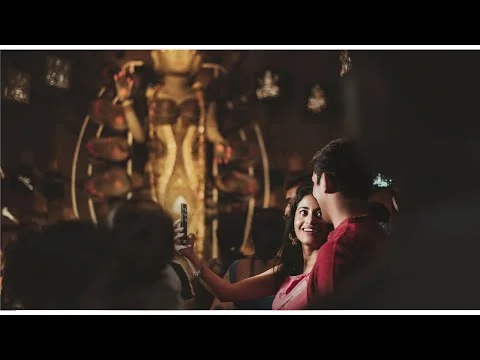
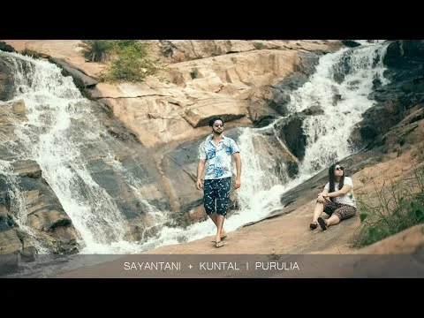
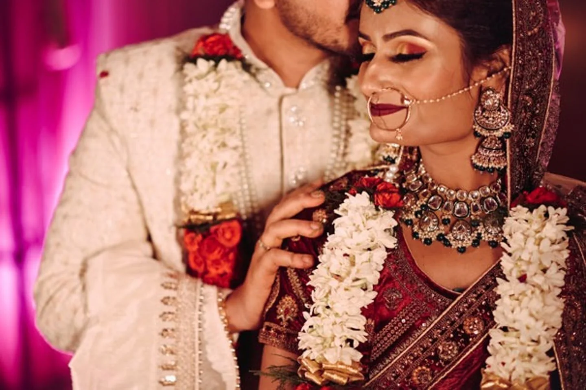
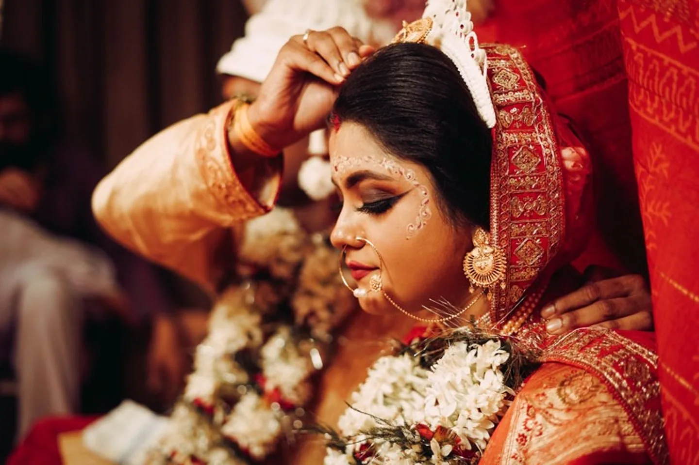

Kolkata wedding photography & films
The day passes.
The feeling stays.
The stolen glance. The familiar laugh. The people who make it yours. Wedding photographs and films to hold on to it all.
Stories without borders.Explore the places we’ve photographed
The photographs you’ll come back to
The little things become
the big memories.
Your mother adjusting that final detail. Your friends laughing through their dance practice. The look you exchange when you finally see each other.
A wedding is full of moments like these. Our photographs give you somewhere to return to them.
Selected collections
Love, in its
many forms.


Wedding season
A season of celebrations.
A story that’s yours.
The invitations are finding their way home. The outfits are being tried on. Somewhere, a family group chat is getting very busy.
And you’re getting ready for a day you’ve imagined in a hundred different ways.
We’d love to hear what you’re planning.
Tell us about your wedding
Stories in motion
Some feelings
need sound.
The voices. The laughter. The pauses between words. Discover a different way to return to your celebration.
Explore the filmsPlaces we’ve photographed
A place sets the scene.
You bring the story.
Kolkata’s celebrations, Purulia’s open landscapes, a walk beside the sea, an afternoon beneath Dubai’s skyline.
Explore the places our cameras have taken us—and the people who made each journey memorable.

Kolkata
Koushani & Aniket · A Durga Puja story
Explore the film
Dubai
City architecture. A story for two.
Explore the photographs
Purulia
Kuntal & Sayantani · Out in the open
Explore the film
Mandarmani
Rajlakshmi & Debanjan · By the sea
Explore the filmA Bengali wedding, close to the heart
So much feeling,
in every tradition.
The anticipation before shubho drishti. The laughter during gaye holud. The familiar voices surrounding you as two families come together.
These are the moments that make a wedding feel like home.
Explore the wedding photographs

Your celebration, our next chapter
We’d love to know
what you’re looking forward to.
Tell us your dates, where you’re celebrating, and the people or moments you especially want to remember. We’ll take the conversation from there.
Tell us about your weddingKolkata · Celebrating across India